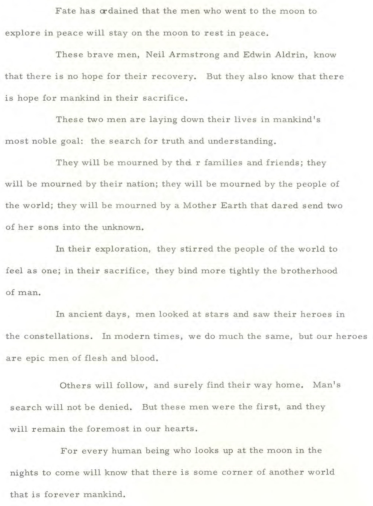

I've seen enough
Help.is.not.coming
×
they left us here to die
Unglitched images from NASA
Music is the
Faster Than Light Soundtrack
by
Ben Prunty
; used with permission. The Faster than Light soundtrack is
available for purchase here.
Numbers Stations Music recorded by
the Conet Project